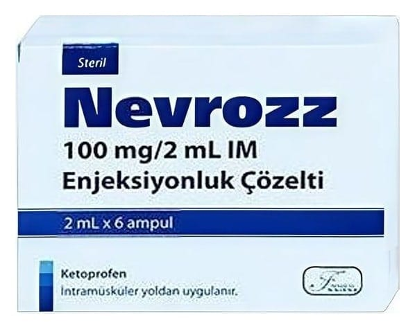

Nevrozz 100 mg/2 ml İ.m.enjeksiyonluk Çözelti, 6 Adet

Ne için kullanılır
KT · Bölüm 1NEVROZZ’un etken maddesi ketoprofendir. Ketoprofen, ağrı kesici ve iltihap giderici (antiinflamatuvar) etkiye sahip steroid olmayan antiinflamatuvar ilaçlar (NSAİİ) grubundandır. NEVROZZ, 2 mL’lik amber renkli ampul içerisinde, renksiz berrak, saydam enjeksiyonluk çözelti şeklindedir. 6 adet 2 mL’lik ampul içeren ambalajlarda sunulmaktadır. Her bir ampul 100 mg ketoprofen içerir. 1/11
NEVROZZ; osteoartrit, romatoid artrit (iltihaplı eklem romatizması) ve ankilozan spondilit (ağrılı ve ilerleyici bir iltihabi hastalık) belirti ve bulgularının tedavisi ile akut gut artriti (ürik asit kristallerinin eklemde birikmesi ile meydana gelen iltihabi durum), akut kas iskelet sistemi ağrıları, postoperatif ağrı (ameliyat sonrası ağrı) ve dismenore (adet sancısı) tedavisinde endikedir.